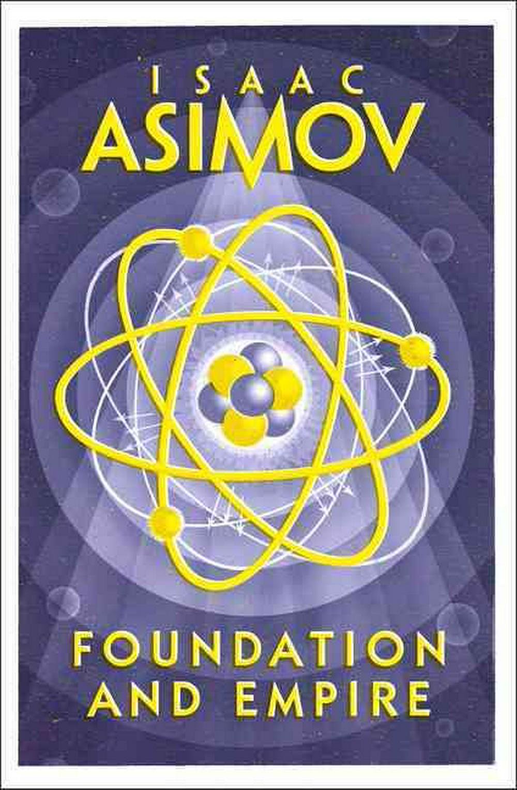

4 -Foundation and Empire (1952)
Synopsis
Led by its founding father, the great psychohistorian Hari Seldon, and taking advantage of its superior science and technology, the Foundation has survived the greed and barbarism of its neighboring warrior-planets. Yet now it must face the Empire—still the mightiest force in the Galaxy even in its death throes. When an ambitious general determined to restore the Empire’s glory turns the vast Imperial fleet toward the Foundation, the only hope for the small planet of scholars and scientists lies in the prophecies of Hari Seldon. But not even Hari Seldon could have predicted the birth of the extraordinary creature called The Mule—a mutant intelligence with a power greater than a dozen battle fleets…a power that can turn the strongest-willed human into an obedient slave.
Download PDF